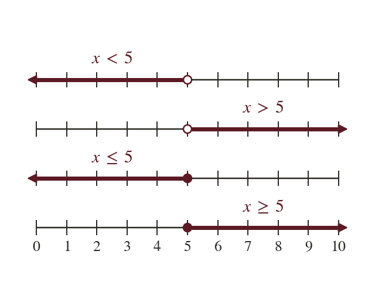

The four symbols
< less than, > greater than. ≤ less than or equal to, ≥ greater than or equal to. Each describes a range: means every number below
< means less than, > means greater than, ≤ means less than or equal to, ≥ means greater than or equal to. Each symbol describes a whole range of values, not a single one - means every number below not just one number.